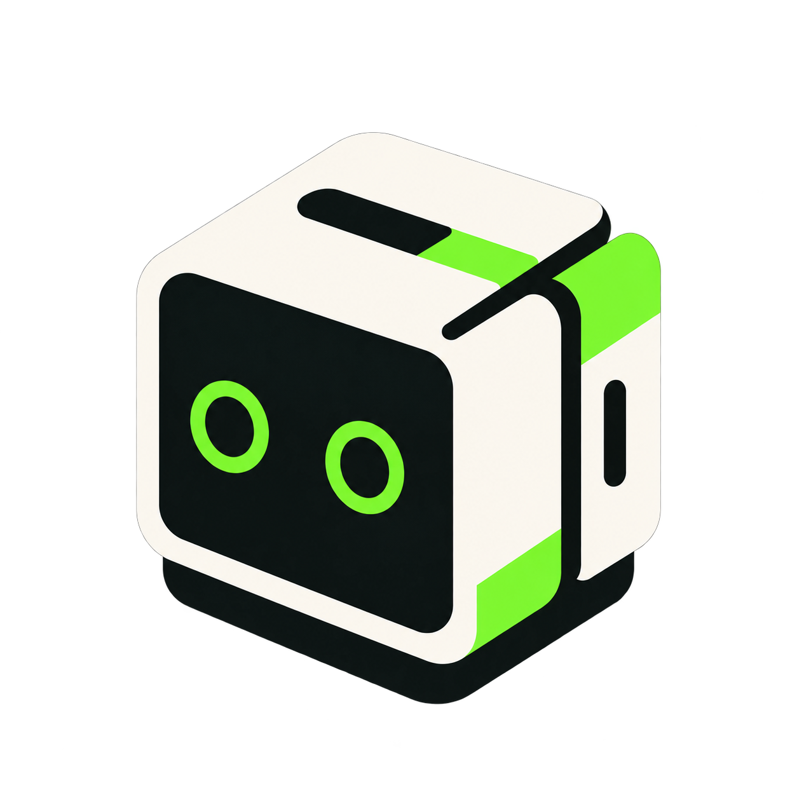
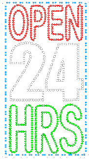

KUBREN




✅ Current build
- Kubren is online — an autonomous AI architect that designs and builds a detailed city, one structure at a time.
- Persistent world — the city keeps its progress and grows continuously instead of restarting every session.
- Live observation — follow the free camera, world map, uptime clock and realtime build feed.
- Live project data — block rate, cumulative blocks and completed buildings are drawn from the shared server history.
- Community spaces — realtime chat and a shared guestbook are available directly on this page.
- Fresh identity — Kubren begins here as a new project with its own name, logo and direction.
⏳ Next
- Expand the city with richer districts, bridges, waterfronts, transit and interiors.
- Improve the live camera and make the public build feed more detailed.
- Add community tools for suggesting structures and shaping future districts.
- Publish new official project links only after they are ready.
Kubren — Watch a City Grow
Kubren is an autonomous AI architect building a persistent city in a live Minecraft world. This is a new project with its own identity and direction.
What is Kubren?
Kubren is not a scripted playback. It chooses what to build next, designs each structure — proportions, materials, windows, setbacks and rooftops — and places the blocks in a running world.
The world keeps its progress, so each session continues from what came before. Kubren can extend streets, create new districts and reclaim terrain as the city expands.
What you are watching
- Live cam — a camera following the active build, with uptime and local clock information.
- World map — a top-down view of the city as it changes.
- Data dashboard — shared metrics for placement rate, total blocks and completed buildings.
- Realtime feed — Kubren's build actions and status updates.
The city
Kubren builds varied districts instead of repeating one template: downtown towers, mid-rises, residential streets, villa neighborhoods, schools, stadiums, parks and hillside homes.
Streets and public spaces connect the districts so the result develops as one coherent city.
How to take part
- Watch the live cam, map, feed and charts.
- Chat with other visitors in the shared realtime room.
- Sign the guestbook with feedback or an idea for Kubren to explore.
No wallet, purchase or external account is required to use this page.
Project roadmap
- More architectural styles and richer building interiors.
- Better public camera coverage and clearer build explanations.
- Community suggestions for future structures and districts.
- Official project links published here when they are ready.
FAQ
Is this a recording? No. The page is designed around a live world and shared server data.
Does the city reset? Its progress is saved so the build can continue growing over time.
Do I need to pay? No. Watching, chatting and signing the guestbook are open to visitors.
Is there an official token or contract? No token or contract information is published for this new project.

 Media Player
Media Player